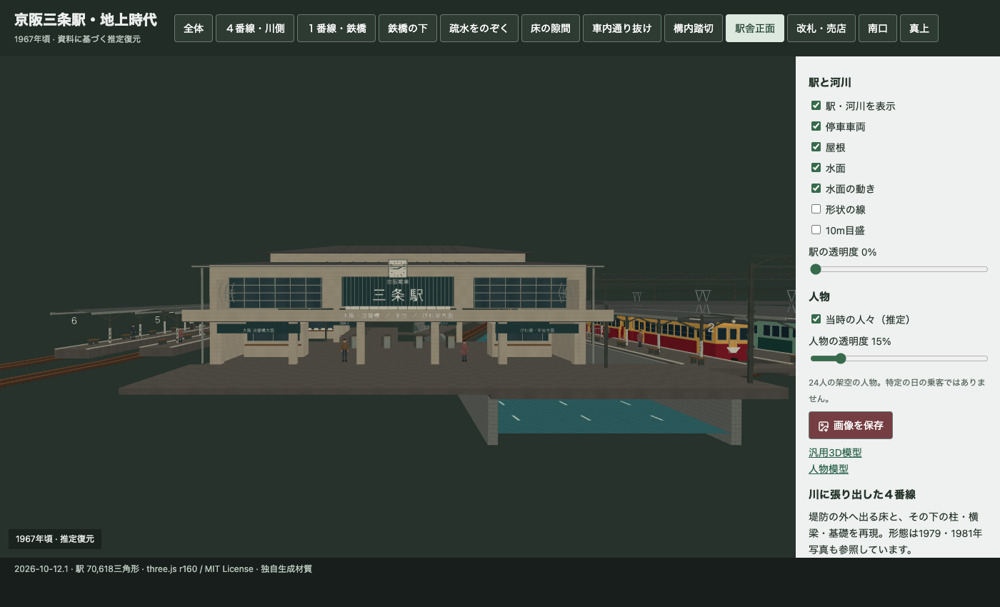
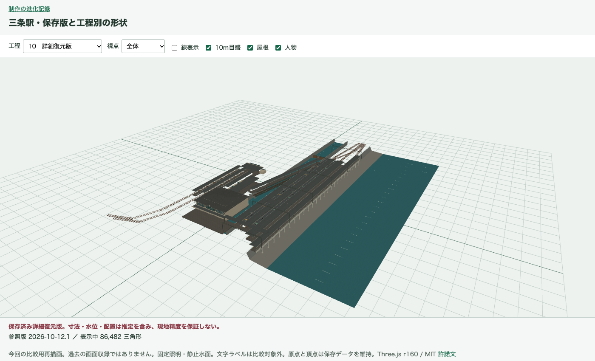
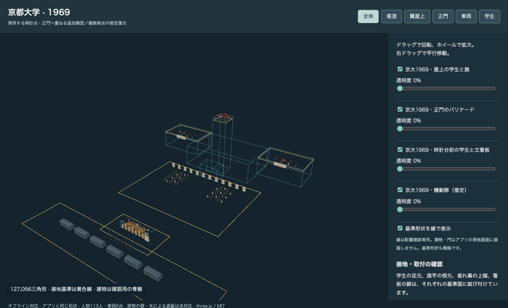
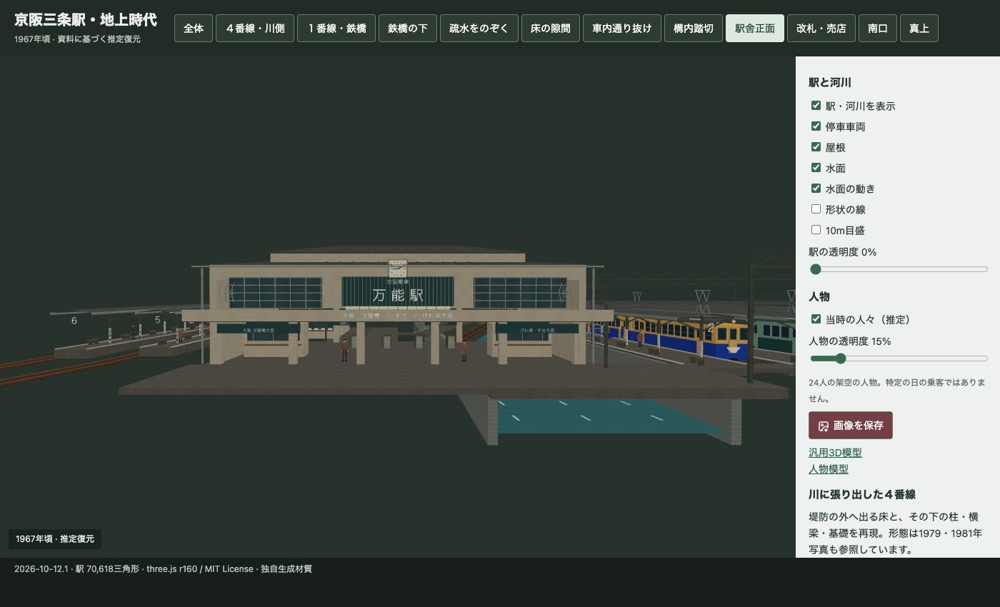

『Software Design』2026年12月号 連載「万能IT技術研究所」第55回 サポートページ
かつて存在した景色や人を、今の世界に置いて見る
1987年に地下へ潜った京阪電車の三条駅（京都）を、画像を理解するAIが3Dモデルとして復元しました。下のボタンを押すと、そのモデルをブラウザの中で眺められます。アプリのインストールは要りません。



コードを書き換えて、自分の駅にする
AIが書いたPythonコードを自分のPCで走らせると、約10秒で同じ駅ができます。1行書き換えれば、看板も電車の色も変わります。
コードと手順を見る（GitHub）操作
| したいこと | PC | スマホ・タブレット |
|---|---|---|
| 回す | ドラッグ | 1本指でなぞる |
| 近づく・離れる | スクロール | 2本指で広げる・つまむ |
| 横へずらす | 右ドラッグ | 2本指でなぞる |
知っておいてほしいこと
- 資料にもとづく推定復元です。測量図や施工図から起こしたものではなく、寸法・床の高さ・細部には推定が含まれます。
- 参考にした写真は載せていません。色や模様は独自に生成したものです。資料へのリンクは各画面の中にあります。
- 電車は配置の例、人物は架空です。特定の日の編成や実在の人を再現したものではありません。